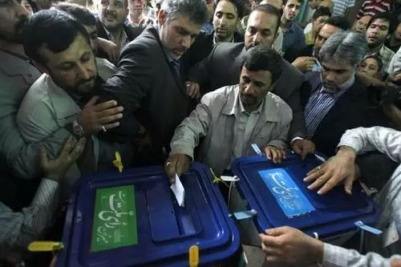
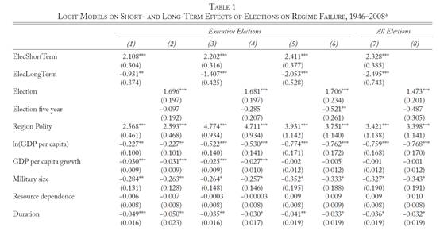

收录于合集
文献来源：Carl Henrik Knutsen, Havard MokleivNygard, Tore Wig, World Politics ,Vol.69,no. 1 ( January 2017), pp.98–143
选举不仅是民主的标志，相当多的威权国家也举行选举，尽管这些选举毫无竞争性可言。威权统治者为什么要举行选举？选举和威权政体存续间到底有什么关系？亨廷顿在《第三波》中指出，威权统治者想通过选举来巩固政治支持，但长期来看正是选举终结了他们。然而事实真是如此吗？同样是1982年，同样是威权国家，墨西哥革命制度党意料之中的胜选延续了这个国家长期以来的稳定，危地马拉的选举却导致了政权的崩溃。
威权统治者可能会被许多目标所驱动，但维持权力绝对是他们行事最重要的逻辑之一，他们会评估自己的行动或政策选择是加强还是削弱了政权存续的可能。因此，对于威权下选举的解释都是基于统治者们想要维持权力的假设。许多研究从吸纳、合法性和信息三个角度来说明为什么选举会促进威权政体的稳定。选举和选举制度中立化了那些本能对政权造成威胁的组织。当然，这种吸纳作用的实现要求相关制度的完善和有效运转。赛贝尔（Merete Seeberg）认为，只有在国家能力高的威权国家，选举才有利于政权稳定。从合法性角度出发的学者认为，即便是跟自由和公平沾不上边的选举也为威权政体的权威被大众认知和接受提供了途径。选举让潜在的政权挑战者看到了政权的力量和弱点，这让统治者和反对派能够进行更为有效的协商从而避免了高成本的暴力对抗。还有些学者从政党和议会的角度出发，马加隆尼（Beatriz Magaloni）和华莱士（Jeremy Wallace）通过对经验现象的观察，发现拥有政党的威权国家更容易通过选举获得稳定。鲍什（Carles Boix）和什沃利克（Milan Svolik）认为，议会的存在增加了威权政体存续的前景。也有学者认为选举实际上能够促成威权政体的瓦解。海德纽斯（Axel Hadenius）和特奥雷尔（Jan Teorell）发现多党的威权国家总是比其他威权国家更脆弱。林德伯格（Straffan Lindberg）认为不论选举是怎样的被操纵、怎样的缺乏竞争，反复组织选举仍然增加了真正的民主化来临的可能性。那些所谓的竞争性威权国家不仅比民主国家更脆弱，甚至还比完全的威权政体更脆弱。

作者认为，这些论述和分析存在三点缺陷。一是他们没有直接研究选举，而是探讨了相关的现象如政党、议会等。二是几乎这一领域所有的研究都没有很好的处理选举与威权政体内在的矛盾性以及威权统治者选举后的策略选择。三是这些研究没有把选举与政体稳定之间的长期效应和短期效应做出区分。作者通过对259个威权政体（涉及1946-2008年的115个国家）的数据发现，从短期来看，选举促进了威权政体的崩溃，但从长期来看，选举增加了威权政体的稳定性。多党的的威权选举要比没有竞争的选举更能在长期上维持政权稳定。有意思的是，当只考虑政权的民主化时，作者发现威权选举在短期内减少了民主化的可能性，但在长期内增加了民主化的可能。
**
**
短期的颠覆效应
即便是受操纵的选举也能揭示出统治者的能力、受欢迎程度和反对派的力量，这就增加了革命或政变的可能性。没有选举，一个不受欢迎的统治者也能维持统治，集体行动的困境往往是反对派难以对政权造成实质性威胁的主要障碍。有研究表明，选举促进了个人参加各种各样的集体行动。在选举过程中，先行者降低了后来者参与集体行动的机会成本，这让集体行动的规模如同滚雪球般越来越大。选举对大规模集体行动的促进作用在苏东剧变和发生“颜色革命”的国家中尤为显著。贝辛格（Mark Beissinger）提出，苏联1989年的选举推动了反对派的大规模动员，这种大规模的集体行动进一步削弱了当局的控制能力。在推动政变上，选举同样可以成为引发燎原之火的火星。对于反对派来说，强大的民众支持让他们有了革命的勇气。对于一些精英来说，与其支持一个被人民抛弃的统治者，不如趁早取而代之，以革命的姿态夺取果实。制止因选举引发的暴力革命和内战则是许多将军们接管国家的理由。
长期的维稳红利
如果选举只是给威权统治者带来麻烦，那么他们为什么还要去组织选举？作者提出了威权统治者从长期选举中受益的三点机制。第一，选举让政权的反对者走到明处，统治者可以更有针对性的去吸纳、镇压这些人。面对反对派，统治者不仅能许以厚禄，更能许以议会甚至政府中的高官。第二，组织成功的选举锻炼了威权国家的国家能力。国家能力上的强大有利于政权稳定。第三，选举增加了政权的国内和国际合法性。这就降低了潜在的敌人投入大量资源进行颠覆活动的意愿。举办选举可以成为统治者不独断专行的姿态，尤其是统治者愿意给反对党分配一些议会席位时。这一信号显著降低了不同行动者推翻政权的动机。正是选举长期进行所带来的维稳红利让威权统治者冒着短期颠覆效应的风险去组织选举。
数据分析
作者纳入分析的样本包括没有举行选举的政权，举行并不自由公平选举（包括立法机关的选举和国家领导人的选举）的政权。关于政权的数据主要来自吉德斯（Geddes）, 赖特（Joseph Wright）和弗朗茨（Erica Frantz），政体是否失败的哑变量构成了回归分析的因变量。涉及选举的数据主要来自National Elections across Democracy and Autocracy(NELDA)数据库。作者认为区分长期效应和短期效应是一个难题，但他通过衰减函数（Decay Function），基于长期效应和短期效应不同的半衰速率对他们做出了区分。作者不仅控制了那些能影响政权稳定并和选举有关系的变量，诸如人均GDP、人均GDP增长率等；作者还控制了那些能被用于吸纳和镇压潜在敌人的变量，诸如自然资源收益，军事规模；邻国是否有民主国家也是作者考虑到因素。作者的回归分析结果如下表。

结论
****作者认为，毫无疑问，威权国家的选举增加了政权崩溃的可能性。这一结果经过控制变量和有效性检测后仍然十分显著。但如果威权统治者能够挺过选举所带来的短期风险，那么选举能在长期为政权稳定加分，尽管这一结果相比而言并不那么显著。
点击阅读原文